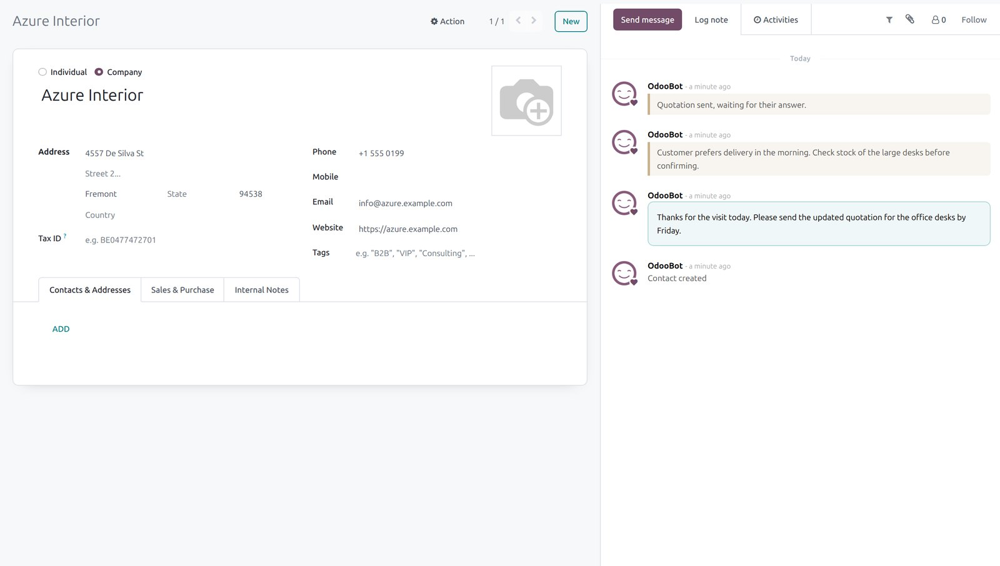
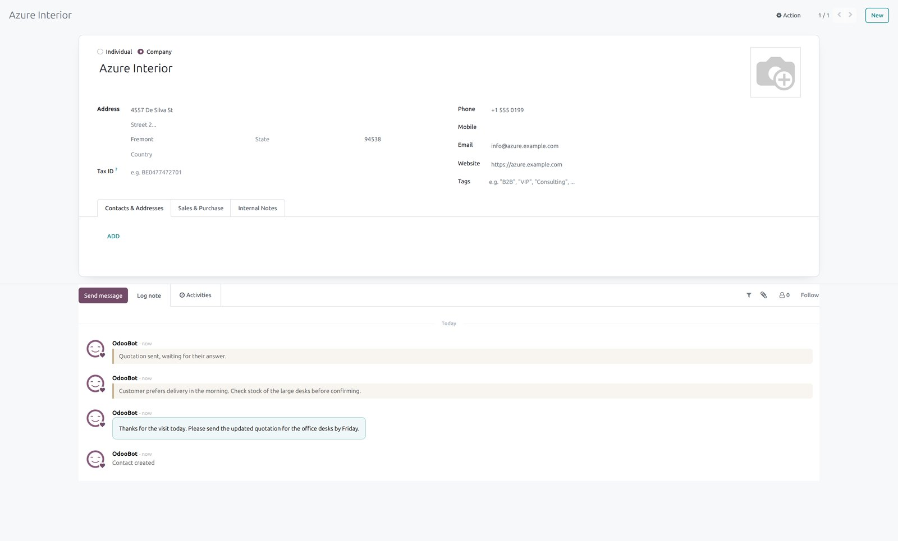
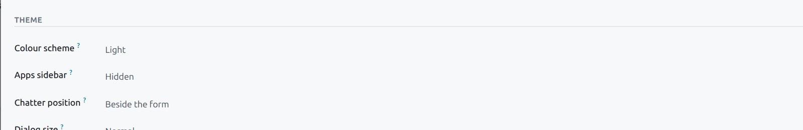

Put the chatter where you work best: beside the form, below it, or where Odoo decides. Each user picks it in My Preferences.

Odoo puts the chatter beside the form only on very wide screens. On a laptop it drops below the form, out of sight. Choose what suits you.

